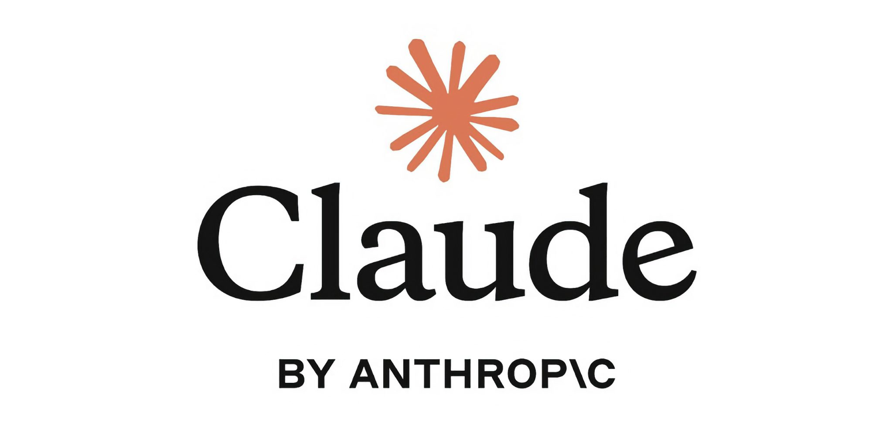

騰訊混元 Hy4 正式發布，7700 億參數首度支援視覺理解與電腦操作
騰訊混元於 11 月 4 日正式發布新一代大語言模型 Hy4，總參數達 7700 億、激活參數 490 億，上下文長度超過 100 萬 tokens。這是混元系列首次加入視覺理解能力，並首次支援電腦操作（Computer Use），可直接操作電腦介面完成任務。Hy4 已上線元寶、WorkBuddy／CodeBuddy、騰訊雲 TokenHub 等產品，定價為輸入每百萬 tokens 6 元、輸出 18 元。騰訊表示模型權重將於近日開源，輕量版 Hy4 Flash 也將於近期發布。隨著開源權重釋出，Hy4 有望成為中國開源生態中參數規模最大的旗艦模型之一。